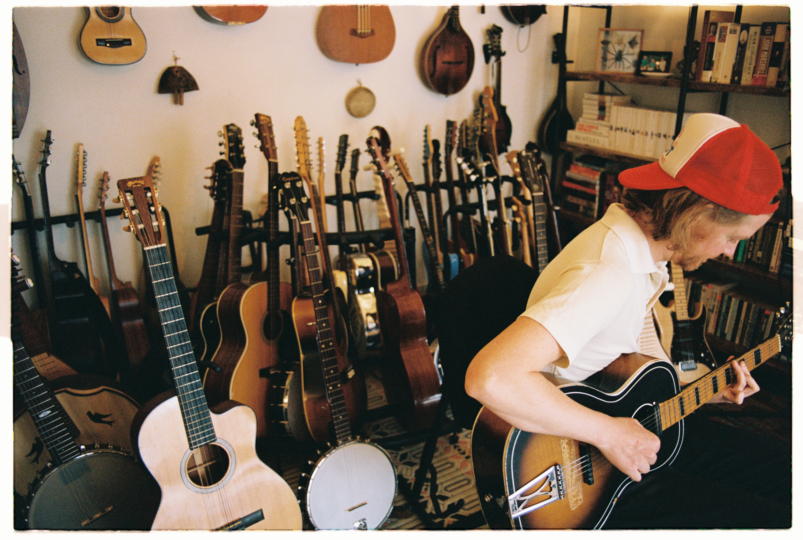
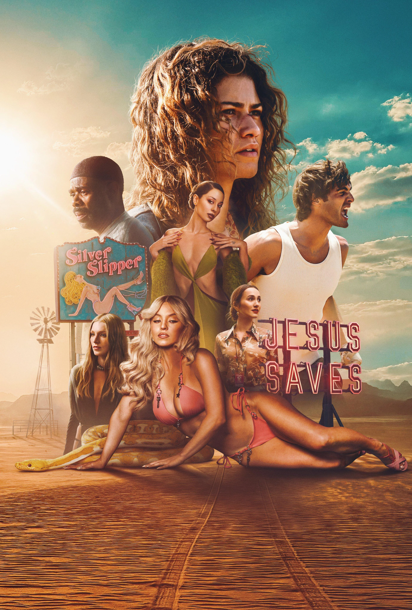
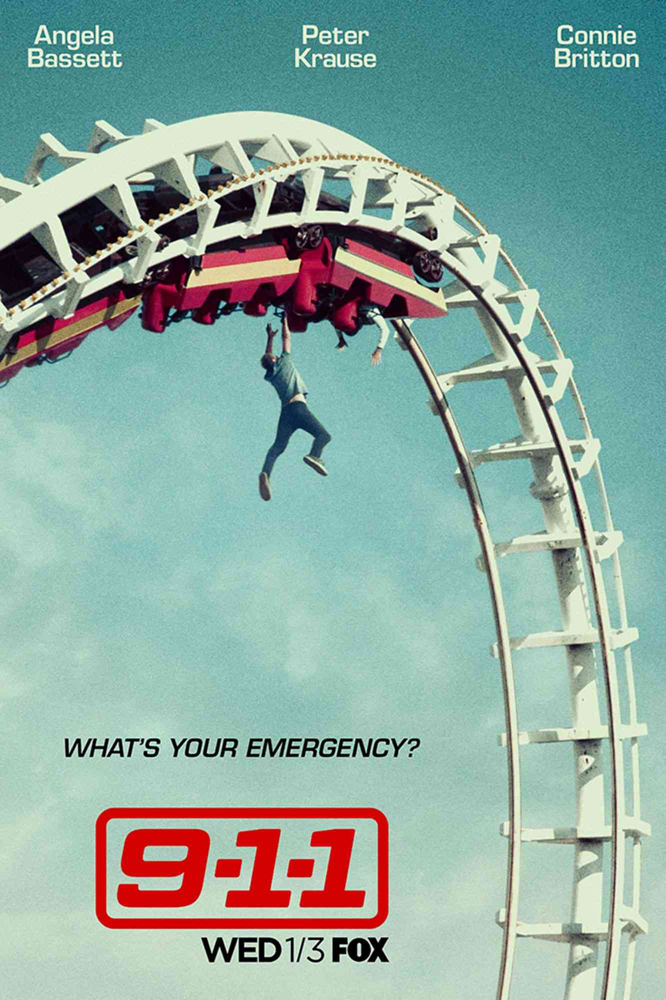

Adam Tressler
Musician • Songwriter • Guitar Coach
Musician • Songwriter • Guitar Coach
Studio / Touring guitarist for 100+ artists including Aimee Mann, Brandon Flowers, Selena Gomez, Lord Huron, and Kacey Musgraves.
Selected TV performances.
 "Wicked: One Wonderful Night" TV special
"Wicked: One Wonderful Night" TV special
 Carly Pearce on Jimmy Kimmel
Carly Pearce on Jimmy Kimmel
 Aimee Mann on PBS
Aimee Mann on PBS
 Selena Gomez on SNL
Selena Gomez on SNL
 Kacey Musgraves on The Talk
Kacey Musgraves on The Talk
Selected Recordings.








Since 2017, I've been writing and recording biographical albums about American presidents and First Ladies. What started as a songwriting experiment became an ongoing passion project—six albums so far, with more on the way.
Please feel free to get in touch with any questions or inquiries.
CONTACT ME →